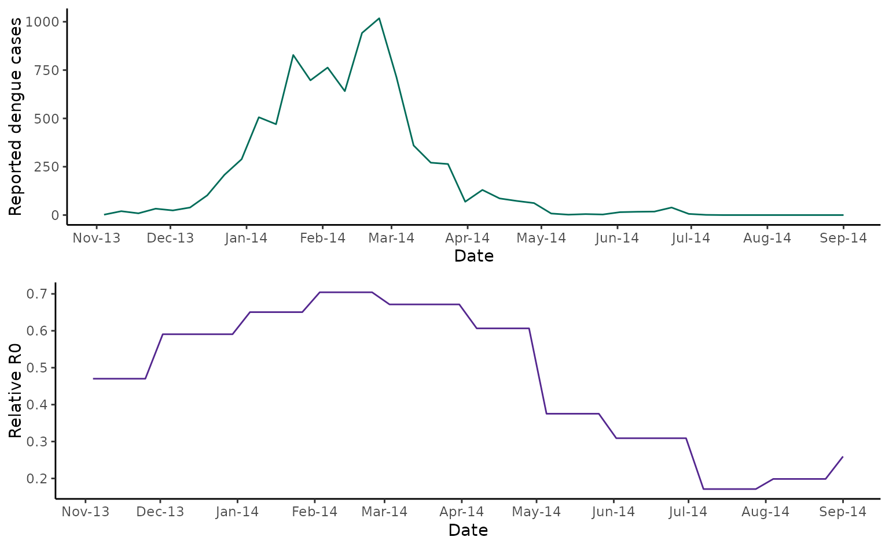

Estimate relative R0 from temperature data for vector-borne diseases with {climateR0}
climateR0.RmdTemperature is an important driver of vector-borne disease transmission, affecting vector reproduction, development, and survival, as well as the probability of pathogen transmission. Previous work by Mordecai and colleagues empirically estimated the effect of temperature on different vector traits, and used these to develop models of temperature dependent R0.
The {climateR0} package extracts temperature-dependent R0 for an input time series of mean temperature for 14 vector-pathogen combinations, focusing on mosquito-borne diseases that pose a major public health threat. Temperature dependent R0 is a relative measure bounded between 0 and 1, where 1 indicates maximum temperature suitability for transmission. This is a useful indicator for the epidemic potential of a vector-borne disease which can be used for situational awareness or be incorporated into forecasting models to predict future cases. Note that we use a relative measure of R0 as other factors affect the absolute magnitude of R0 such as immunity, control measures and population behaviour, which are not considered here.
Case study - 2013/14 DENV3 outbreak in Fiji
As a first case study, we’ll use data from a 2013/4 DENV-3 outbreak in Fiji. Here we show laboratory confirmed cases over time in Central Division.
fiji_cases <- fiji_2014 |>
ggplot2::ggplot() +
ggplot2::geom_line(ggplot2::aes(x = date, y = cases), col = "#016c59") +
ggplot2::scale_x_date(breaks = "month", date_labels = "%b-%y") +
ggplot2::labs(x = "Date", y = "Reported dengue cases") +
ggplot2::theme_classic()
fiji_casesIn the same dataset, we have a time-series of monthly mean
temperatures (in °C) for Central Division, Fiji. To extract
corresponding temperature-dependent R0 values from the
temperature-relative R0 curves estimated by Mordecai et al, we use the
temperature_R0() function. Within the function call, we
specify a vector-pathogen code of AeaeDENV for the vector
Aedes aegypti and pathogen dengue virus.
fiji_2014$rR0 <- temperature_r0(fiji_2014$av_temp, "AeaeDENV")
#> Returning relative R0 for vector: aedes_aegypti and pathogen: dengue_virusNow we can plot relative temperature-dependent R0 values alongside case data.
fiji_rR0 <- fiji_2014 |>
ggplot2::ggplot() +
ggplot2::geom_line(ggplot2::aes(x = date, y = rR0), col = "#54278f") +
ggplot2::scale_x_date(breaks = "month", date_labels = "%b-%y") +
ggplot2::labs(x = "Date", y = "Relative R0") +
ggplot2::theme_classic()
fiji_rR0
cowplot::plot_grid(fiji_cases, fiji_rR0, nrow = 2)
As discussed in Kucharski et al (2018), comparing the case time series with temperature-dependent R0 indicates that a fall in transmission due to seasonal temperature variation cannot fully explain the fall in cases from March 2014. In this paper, Kucharski and colleagues found that a model including the build-up of herd immunity and a decrease in transmission resulting from a vector control campaign in March 2024 better captured the observed pattern of cases.
Case study - 2013/14 Zika outbreak in French Polynesia
As a second study, we’ll use data from a 2013/4 Zika outbreak in Tahiti, French Polynesia. Here we show laboratory confirmed cases over time from sentinel reporting sites in Tahiti.
tahiti_cases <- tahiti_2013 |>
ggplot2::ggplot() +
ggplot2::geom_line(ggplot2::aes(x = date, y = cases), col = "#016c59") +
ggplot2::scale_x_date(breaks = "month", date_labels = "%b-%y") +
ggplot2::labs(x = "Date", y = "Reported Zika cases") +
ggplot2::theme_classic()
tahiti_casesIn the same dataset, we have a time-series of monthly mean
temperatures (in °C) for Tahiti. Again, we use the
temperature_R0() function. Within the function call, we
specify a vector-pathogen code of AeaeZIKV for the vector
Aedes aegypti and pathogen Zika virus. (Note that the main
vectors in French Polynesia include both Aedes aegypti and
Aedes polynesiensis.)
tahiti_2013$rR0 <- temperature_r0(tahiti_2013$av_temp, "AeaeZIKV")
#> Returning relative R0 for vector: aedes_aegypti and pathogen: zika_virusNow we can plot relative temperature-dependent R0 values alongside case data.
tahiti_rR0 <- tahiti_2013 |>
ggplot2::ggplot() +
ggplot2::geom_line(ggplot2::aes(x = date, y = rR0), col = "#54278f") +
ggplot2::scale_x_date(breaks = "month", date_labels = "%b-%y") +
ggplot2::labs(x = "Date", y = "Relative R0") +
ggplot2::theme_classic()
tahiti_rR0
cowplot::plot_grid(tahiti_cases, tahiti_rR0, nrow = 2)As discussed in Kucharski et al (201), the outbreak ended before temperature or rainfall levels changed in a way that would imply a transmission reduction, indicating that immunity played a major role in driving the epidemic decline. This is consistent with later antibody data reported by Aubry et al ( 2017)
Caveats to the model approach
The models used here do not account for other aspects of weather and climate variability that are likely to influence vector-borne disease dynamics, including variation in precipitation, relative humidity, and temperature over time. This approach also does not account for time lags between temperature and R0; instead, it calculates a static snapshot of the relative temperature suitability for transmission at a given point in time, assuming the temperature had been constant up to that point. In reality, multiple time lags may be relevant to R0. For example, temperature 4-8 weeks ago may affect the mosquito population size and development rate, whereas temperature 2-4 weeks ago may affect the vector competence and extrinsic incubation period.
Despite these limitations, temperature-dependent relative R0 has been used to predict geographical and temporal variation in different settings for malaria, dengue, Zika, Ross River virus and West Nile virus (further details in the references below).